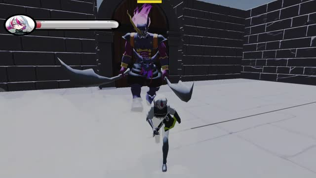
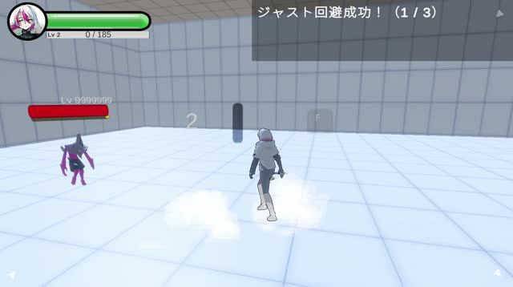
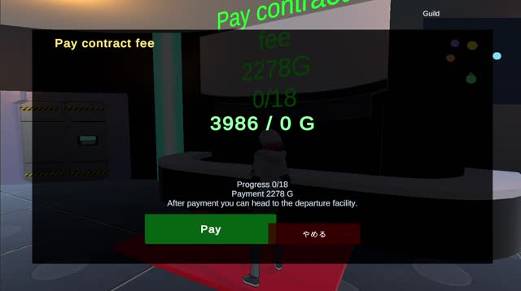
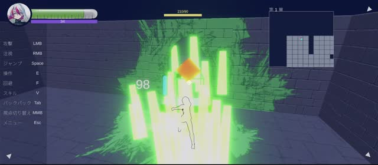
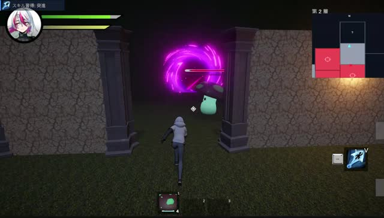
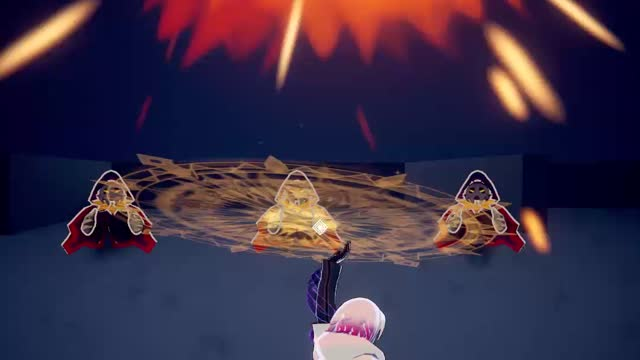

国際理工カレッジ ゲームクリエイター科 2年｜プランナー兼プログラマー
自分が作ったゲームの世界で、人々が生活する未来を作る
企画から実装まで1人で回せる
Unity / C# 1,800時間以上
Steamで体験版公開中
夢
- 誰もがゲームの世界で働き、売り買いし、暮らす
- 戦う人・作る人・商う人がつながる世界
作ったもの
- DIMAZE：Steam体験版公開中（2027年1月発売予定）
- Katana vs Yokai：Roblox、制作中
- コーギーゴージャス：産学連携企画にエントリー
- BugBugSinSin：バンダイナムコ杯ジャム
- 倉庫番：個人、8時間
動き方
- 小さく作って検証
- AIで学びながら作る
- 出して、甘さに気づいて、直す
目次
聞きたいところへ
動機
なぜプランナー、なぜサイバーエージェント
SAO→
戦うだけじゃない→
ゲーム全体に関われる仕事
なぜサイバーエージェント
- 若手に任せる文化
- 広告で人を集める力×運営の知見
- スマホから海外・PCへ
キャンプで得たいこと
- 現役プランナーの厳しい目
- 一緒に作りたい人との出会い
この先
- 結果を出して、事業を任される人に
- 3年目ごろSteamに力を入れる
詳しく
- 小学生でSAOを見て、現実を全部忘れられるゲームの世界に惹かれた
- 中学生で異世界のんびり系やレディ・プレイヤー1を見て、戦闘だけが全てではなく、世界で働いて暮らすこと自体が遊びになると気づいた
- ゲームクリエイターは全部やる仕事だと思っていたが、調べると仕事が分かれていた。全部に関わりたかったので、プランナーに目が行った
- 若いうちから結果を出して仕事を任せてもらい、作りたい世界を早く形にしたい
DIMAZE
敵の魔法は、ぜんぶ奪える
吸って、撃ち返す。終わりのない迷宮のアクションローグライト
仕組み
- 魔法を吸う → 魔力
- 魔法陣を吸う → 魔法を覚える
- 剣や突進は吸えない
体制と担当
- 7人で開始 → 今は自分＋デザイナー2人
- デザイン以外ぜんぶ担当
- 似ている作品：カービィ、リムル
チームで工夫したこと
- 言葉・スライド・試作で伝える
- 物語を作り切れる規模に絞る
- 段階ごとに確認する
詳しく
- 核になる感情は「俺のものだ」。覚えた魔法は、奪った魔力で撃つ。剣と魔法で答えが分かれるから判断が生まれる
- 2026年2月制作開始。本気度の差でメンバーが抜け、抜けた分の企画・実装は自分が引き受けて体験版の公開までやり切った
- 担当：企画・ゲームデザイン、プログラム、演出・エフェクト、Steamページとトレーラー
- 絵が描けないので、AIで叩き台を作って見せる。最終的なデザインはデザイナーに任せる
- 入れたい要素の実装時間を説明して、物語の規模にデザイナーの納得をもらった
- 途中のデータを残す仕組みがなく作り直しをさせてしまった反省から、今は段階ごとに確認している。海外の3Dデザイナーとは、こまめな確認で期限を守ってもらった
DIMAZEの結果（2026年10月26日時点）
伸びてはいる。でも、まだ甘い
1,187体験版の入手
32 → 103ウィッシュリスト
やめる理由①
触っても、すぐ飽きる
やめる理由②
触る前に「何のゲーム？」でやめる
面白さの核を、最初の数分に置く
詳しく
- 原因は、売りの「吸って撃ち返す」の見せ方と、使う必要性の作り込みが甘かったこと
- ①吸う理由が薄く、剣だけで進めてしまう。メインアクションが必須になっていない
- ②最初の数分で、吸って撃ち返す気持ちよさに届かない
- 2か月直してネクストフェスに出し、32件から103件に伸びた。直したのは、渦を小さく、吸った魔法が魔力の粒になって吸われる演出、初めての魔法陣を吸ったときに画面中央に表示してからホットバーへ動かす視線誘導
- スクウェア・エニックスの方には「プロが気をつける所はほとんど押さえられている」と言ってもらえた
DIMAZE
足すより、絞る。そして「吸う」を必須にする
話せるAI×無限迷宮→パリィ→ジャスト回避→ホログラムのデコイ→敵の魔法を吸う
8か月の進化






捨てた要素
- 疲労ゲージ
- NPCの仲間・納品・世界観
次の改善
- 吸う操作を右クリックに
- 剣だけでは進めないギミック
- 吸うと薬草・強化素材
- 毎回クエストが変わるダンジョン
「吸って撃ち返す」を、進むために必要な行動にする
詳しく
- 重すぎる、独自性がない、分かりにくい。その判断で4回捨てた。学校には「TGSに出す」と宣言していて、引き返せなかった
- 疲労ゲージ：戦い続けることが遊びの中心なのに、止めるだけの仕組みになり不快
- NPCの仲間・納品・世界観：物語を安定させるには作る量が膨らむ。今の規模では無理。異世界鍛冶屋の核として残している
- 右クリック：いつでも触れる位置に置く。ギミック：吸った魔法でしか壊せない仕掛けや敵。素材：戦闘以外の報酬で繰り返し触らせる
- 部屋が枝分かれするダンジョンに加えて、フィールド型も作る。出てくるものでクエストが変わる
- AIにダンジョンを実装させている間に、自分はメインアクションの気持ちよさを詰めている
同時進行中：Katana vs Yokai（Roblox）
DIMAZEで捨てたパリィを、Robloxで形にする
刀で妖怪と戦う対戦アクション。1人で制作、2週間で公開予定
なぜRoblox
- タグだけで見てもらえる
- モデル不要、粗が目立たない
- 対戦×ブレインロットは競合が少ない
- 捨てたパリィを活かせる
なぜ同時に
- 卒業まで残り1年
- AIの実装待ちの時間を使う
進め方
- 判断は自分、実装はAI
- 図で合意してから作る
詳しく
- 2週間の休みのうち1週間でメインアクションを作り、残りでボリュームを足して公開
- 学校のPCと家のPCで、DIMAZEとRobloxの2本を同時に進めている
- 実装はClaude（Roblox Studio・BlenderにMCPで接続）。作る前に構図を図にして、角度を数字で決める
- 刀を横から掴んでいるように見える → 刃が内側を向いていた。握りを90°回して刃を下向きに
- 走りがゾンビっぽい → 腰と胸で折れて猫背だった。全力疾走の動きに差し替えて背中をまっすぐに
- 走ると首が振れすぎる → 胸のひねりを首で打ち消し、頭の向きを固定
DIMAZEの最初の形
LLMは、中心に据えないと成立しない
やったこと
- ローカルLLMでNPCと会話
- 仲間にしてついて来させる
- 約200時間
ぶつかった壁
- 会話の履歴を全部読ませないと話せない
- 軽くしても約2,000MB
判断
- 1か月で没 → 今のDIMAZEへ
- 鍛冶屋では「出来事を作る役」だけ
作ってから判断する
詳しく
- Qwen・Llamaをローカルで動かし、Unity内のNPCと会話。3D空間を歩いて話しかけ、仲間にしてついて来させるまで実装。Unityを始めて50時間ほどのころから
- 最初に設定を渡すだけでは会話にならない。履歴を送らない軽い形でも、会話しているだけでUnity Editorが約2,000MB使う
- 残った戦闘の基礎と自動生成が今のDIMAZEになった。ついでのクエスト生成は意味がないと判断し、作らなかった
作りたいゲーム：異世界鍛冶屋（仮）
薪割りから成り上がり、作った物で世界の経済を動かす
寒波が来れば、薪が一晩で10倍
作る→売る→世界が動く→経済を動かす
遊び
- ほのぼの経営、1〜4人協力
- 出来事で値段が毎秒動く
- 店じまい → 腕前だけ持って再挑戦
なぜ鍛冶屋か
- 一番大きい市場は作業ゲーム
- 作る→売る→動く が分かりやすい
作る順番
- まず薪割りと値動き
- 戦闘・課金はまだ作らない
詳しく
- 一番ワクワクする瞬間は、自分の作った物が、遠くの国の出来事で一晩で何倍もの値段になること
- 毎朝、土地代と給料が引かれる。マイナスなら「最後の一日」。戻せなければ店じまい
- LLMは出来事を作る役だけ。戦争 → 鉄不足 → 鉱山町が好景気、のように連鎖させる。値段の計算はゲーム側
- 作る順番：薪割り → 薪の市場と値動き → 機材と注目度 → 炉と部品 → 雇用と店じまい。まずSteamで
選考課題
MONOPOLY GO! がヒットした理由
入口：広告
「これなら俺でもできるかも」
面白さ：奪い合い
同じくらいの人の拠点を壊す
課金：結果が見える
払えば何が起きるか一目で分かる
改善するなら
- つながり方を時代に合わせる（LINEで通知）
- やめた人を一瞬でも戻す
詳しく
- きっかけはポイ活。漫画アプリやYouTubeの広告がほとんどこのゲームで、ゲームをしない人まで連れてくる仕組みだと感じた
- 余裕のある人は、考えずにサイコロを回したいから払う
- 招待リンクは、遊んでいる人が自分から誘わないと動かない。LINEなら、新しく始めた人がいたら、やめた人に自動で届く
- それくらいしか課題がないほど、よくできている。「課金しないと無理だ」と考える人は、そもそもターゲットではない
好き
好きな作品と、遊んだゲーム
Re:ゼロから始める異世界生活
- アニメ3周
- ウルガルム戦
- もがきながら強くなる主人公
とあるおっさんのVRMMO活動記
- レベルより腕で勝てる設計
遊んだゲーム
- プロセカ：約3年、ほぼ毎日
- MONOPOLY GO!、ロイヤルマッチ、原神、ゼンレスゾーンゼロ
詳しく
- リゼロ：フィギュアも複数。ウルガルム戦は、ほぼ仲間なしでスバルが一人で正面から戦った最初で最後の戦い
- VRMMO活動記：レベルが低くても、腕があれば上位のプレイヤーに勝てる。DIMAZEのジャイアントキリングにつながっている
- プロセカ：中1〜高1、EXPERT中心。好きな曲は「雨とペトラ」、一番難しくてクリアしたのは「六兆年と一夜物語」